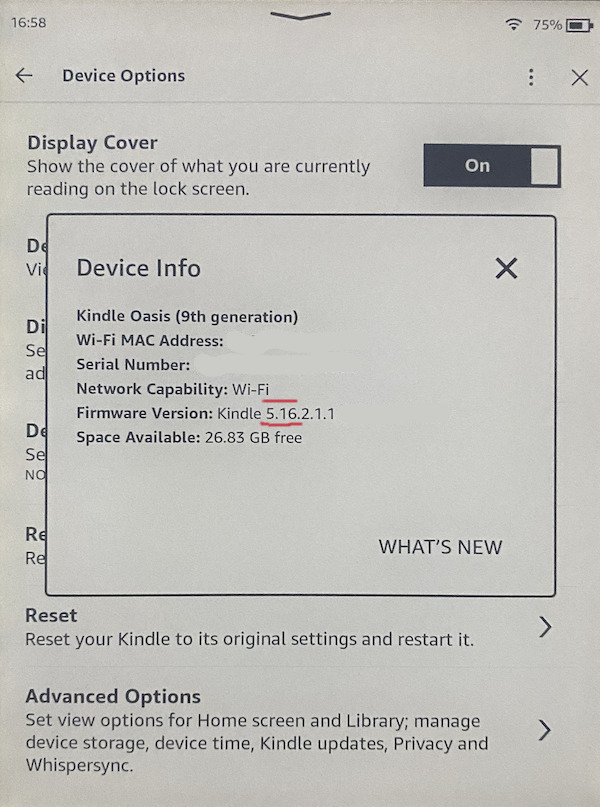
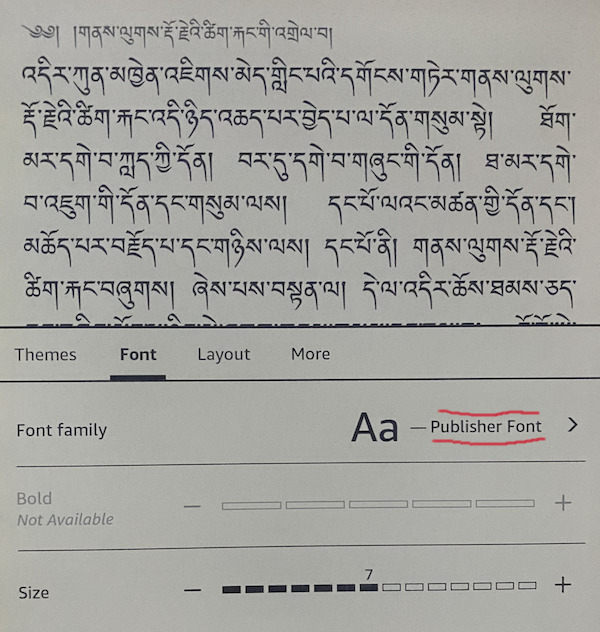

Amazon Kindle#
Preparations#
{kind=link}
Recent Amazon Kindle ebook readers do support display of Tibetan ebooks.
The Kindle reader must have firmware 5.16 or higher in order to be able to display Tibetan.
The Tibetan ebook should come with a Tibetan font embedded. (Visit Lotsawa House for well working examples.)
The Kindle reader “Font” needs to be set to “Publisher font”.
Checking the Kindle Firmware version#
Kindle devices that are from about 2018 or newer should be able to run the latest firmware.
Check your Kindle’s firmware version: Settings / Device Options / Device Info. It should say something like:
Firmware Version: Kindle 5.16.x
or a higher number.
You can check, if your Kindle reader can be updated to a newer version by visiting Amazon’s Kindle Firmware download page.
Kindle default font#
{kind=link}
The font setting for your Kindle reader must be set to ‘Publisher font’. If you select any Western-only font, your Kindle will display rectangles with hex-codes instead of Tibetan glyphs.
Limitations and issues#
If the ebook contains Tibetan characters in the title, the Kindle overview-pages won’t be able to display that correctly.
Amazon sometimes fails to convert ebooks. See below for workarounds
Send books to your Kindle#
Ebooks in epub format need to be mailed to your Amazon Kindle email account in order to be converted into Amazon’s proprietary format and then distributed to your Kindle.
On your Kindle, go to Settings / Your Account / Send-to-Kindle E-mail
The email address given there (in form xxxx@kindle.com) can be used to email epub formatted ebooks to your Kindle.
Warning
Amazon’s ebook conversion is very picky, and sometimes you’ll get a mail back informing you that ‘your ebook could not be delivered’. See below, ‘Kindle Previewer’ for more information on how to fix this.
Ebook sources#
Visit Lotsawa House, and select any text on the site. You will find an
EPUBdownload link on each page for every text.Email the downloaded
epubfile to your Kindle email address. (Note: Do not try to transfer the epub document via USB, your Kindle won’t be able to readepubdirectly. It is however possible to locally convertEPUBinto Amazon’s proprietarykfxformat, see Ebook tools for the non-trivial conversion process. The resulting files can be copied locally and distributed independent of reliance on clouds.)
Strange rectangles instead of Tibetan?
If Tibetan does not display correctly (strange rectangles with codes inside), then select ‘Publisher font’ (s.a., ‘Kindle default font’.)
Installation of additional fonts#
You can install additional Tibetan truetype fonts on your Kindle. Simply connect your Kindle using an USB cable and put Tibetan font files into the fonts folder of your Kindle.
The font then can be selected while viewing your Tibetan ebook.
MTP and macOS#
Connect your Kindle to the Mac
Recent firmware versions have switched to the MTP-protocol for USB-connections. macOS does not support this without additional software.
Some programs for macOS that support MTP:
Kindle Previewer#
You can install the Kindle Previewer to check if an epub Ebook is compatible with Amazon’s Kindle converters.
It is available for macOS and Windows.
The Kindle Previewer is the only way to get meaningful error-messages, if Send-to-email rejects an ebook.
Kindle compatible epub ebooks#
In addition to the Kindle Previewer, Sigil and Calibre are useful tools to edit and repair ebooks that are not Amazon-compatible.
Frequent causes for problems are:
The table-of-contents contains errors. Use Sigil (or the Calibre ebook-editor) to re-create the table-of-contents
Missing Metadata. Amazon rejects ebooks that have missing metadata fields. Download a known-good ebook (e.g. from Lotsawa House) and compare the metadata fields in
content.opf
Example metadata:#
<metadata xmlns:dc="http://purl.org/dc/elements/1.1/" xmlns:opf="http://www.idpf.org/2007/opf">
<dc:title>My Book Title</dc:title>
<dc:identifier id="epub-id-1">urn:uuid:8d33cba4-fd33-4c33-a33d-9616bfd1f7ba</dc:identifier>
<dc:date id="epub-date">2023-12-11T14:10:10Z</dc:date>
<dc:language>en</dc:language>
<meta property="dcterms:modified">2023-12-11T15:45:33Z</meta>
<meta name="Sigil version" content="2.0.2"/>
</metadata>
Technical details#
Firmware history#
Interestingly, if you have a very old Kindle, Tibetan might work just fine. It seems that firmware version 5.9.x is able to display Tibetan for all ebooks, including the ability to display Tibetan titles in overview. So Tibetan support of those very old devices (older than about 2016) was actually better than even the most recent Kindle firmware.
Identifying your Kindle model#
Older Kindle models do not show the name of the Kindle model in the info-screen. You can use this overview to figure out your Kindle model using the model number (small print on the back) or the serial number (from info screen).